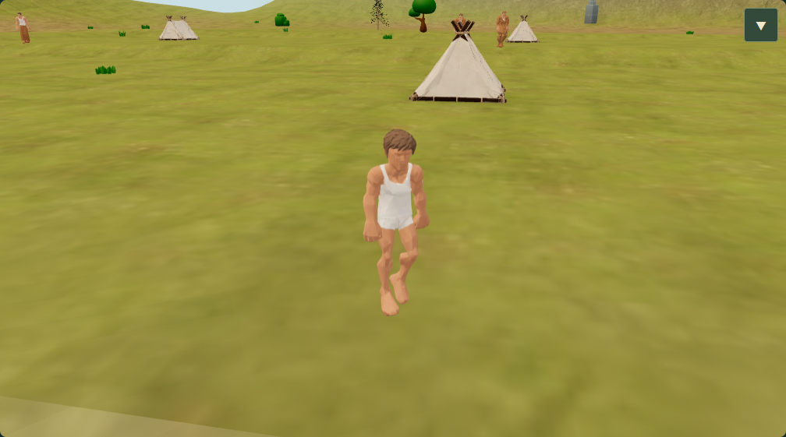
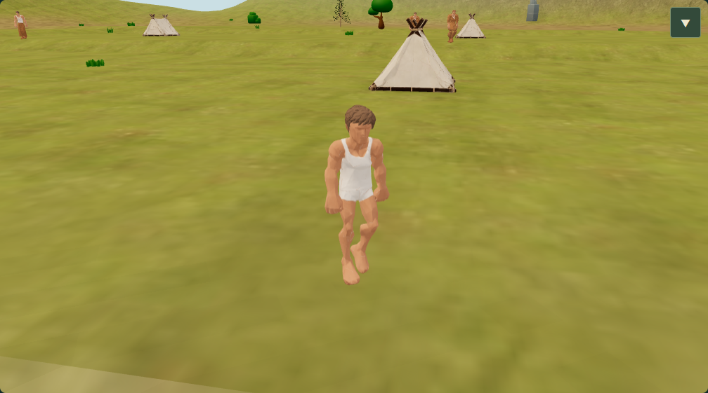
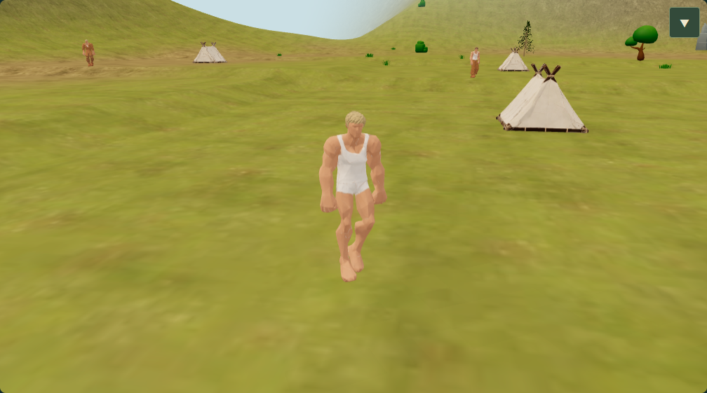
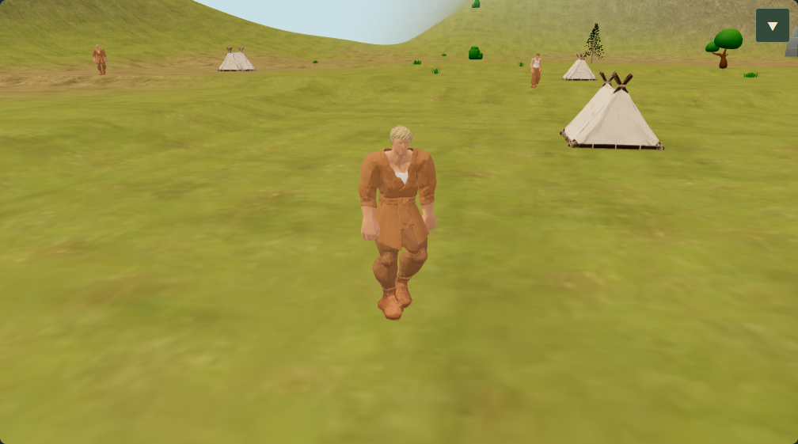
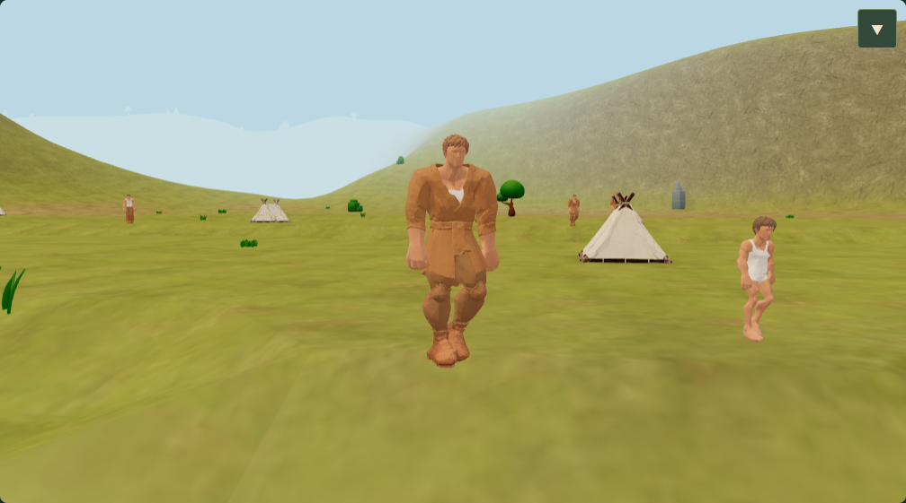

Individual birthdays · #171
The new tab starts a fresh review session. Existing campaigns keep their saved policy. To deliberately opt in from an existing tab, use Menu → Campaign → New campaign from seed with the birthdays query in its URL. Restart preserves the saved policy.
Individual dates are experimental and are not the default yet. Annual economics, mortality and Saga publication retain their existing dates. Owner visual/performance review is required before default activation.
Measurements and validation report · Calendar contract · Draft PR #175
Measured effect
In the full-year native comparison, the largest scene-update batch fell from about 1.64 s to 0.44 s. Total fitting effort remained comparable. Normal production pilots showed smaller annual peaks at all three year speeds.
The Core result is mixed: short batches stay approximately flat, while single 1,000-tick batches cost about 9–12% more in this host sample. At 300 residents, that is about 0.17 ms extra per simulated tick. This does not establish a strict no-overhead result or fix every annual stall. See the report for source pins, full numbers and limits.
Fifth birthday · actual clock and reload
Desktop Edge with tablet touch emulation: the child stays indoors at four, appears outside at five, remains selected and retains the new age after reload. Physical mobile hardware has not been re-tested.


The following native scene comparisons cross canonical tick 500 → 501 using controlled fixture birthdays. Presentation movement is paused for the fixed-camera images; the real Core command performs the birthday. Original CharacterDNA.age stays unchanged. Click an image to inspect it at full resolution.
Child growth


Adult clothing and stage


Start of gradual greying

At age 46, the existing greying amount is 0.025; this starts gradually and does not immediately turn the hair fully grey.
Elder stage
Selection and ownership
Aged residents remain selectable through mouse and touch ray picking. Removing and recreating a presentation model preserves the Core and returns to the same model ownership counts, with zero placeholders. One ownership cycle is checked; this is not a long-term heap-stability claim.
Fifth-birthday results · Native stages and picking · Core matrix · Full-year fitting matrix · Normal production frames